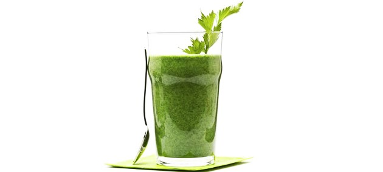

Excelente repositor de energias, aconselhado como refeição durante o dia para os atletas profissionais.
Delicioso prato a base de carne de sol, creme de leite, requeijão e mandioca, tem como dar errado um prato assim?
Prato à moda italiana, refeição rápida e saborosa, disponível nos melhores estabelecimentos do Brasil.
Para os vegetarianos de plantão, essa salada com carne de sol e brócolis alimenta seu corpo sem agredir o meio ambiente.
Suculenta e irresistível mistura de carne moída, queijos e massas para atender o paladar mais apurado junto com uma taça de vinho.
Bebida energética a base de açaí para os atletas de fim de semana que não podem tomar uma tigela de açaí puro.
Para os apreciadores da cozinha brasileira, temos a caipirosca, bebida a base de cachaça com uma rodela de limão.
Levanta até defunto, essa bebida a base de goiaba junto com uma vaca atolada resolve qualquer problema de ressaca.
Refrescante e hidratante, tome após os exercícios, mas cuidado com o sol, pois o limão provoca queimaduras na pele.
Aos admiradores de alimentos naturais e comidas vegan, divirtam-se descobrindo os mistérios desta bebida.